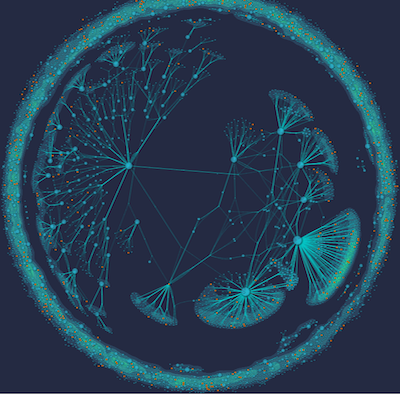

Research Summary
Nowadays, here is a new trend in the area of Artifitial Intelligence. Researchers from academic communities and industries try their best to filter meaningful informations from masses of data. Topics like Neural Networks, Social Network Modeling renew their youth after decades. Visualization is also another efficient way to discover knowledges in data based on the fact that human brain has a strong visual perceptual ability. The key idea is to convey information to people.
As a part of data visualization, graph visualization helps people get an intuitive view about the relations between objects and help people understand graph structure better. Recent studies proposed a variety of methods like Node Elimination, Edge Bundling and so on to avoid cluttering when the graph size keeps growing. Even though, results are limited when the number of nodes in the graph exceeds one million. Hence, there is a demand to study large graph visuliazations.
Interests
- Data Visualization
- Computer Graphics
- Social Network Analysis
- Human-Computer Interaction
Research Projects
-

Current graph visualization technologies can only support relatively small data whose nodes number is lower than ten thousand. Therefore, there is a need to develop a new graph visualization method which can support millions of nodes in the graph.